Ход выполнения работы
а) Построим асинхронный RS триггер на элементах "ИЛИ-НЕ."
Для этого соберем на рабочем программы столе следующую схему:
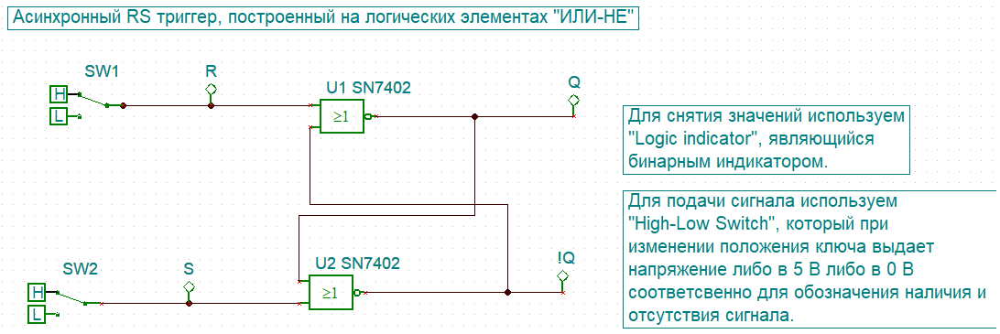Теперь приведем схему в действие и проверим ее соответсвие таблице истинности, приведенной во введении:
Так, если начать с положительного сигнала на выходе Q:
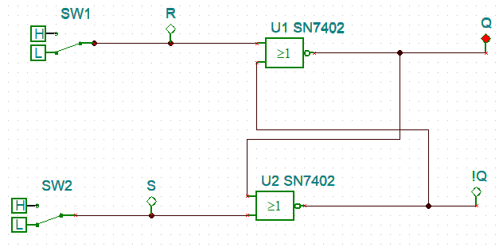Для получение нуля на этом выходе переведем в положение единицы вход R:
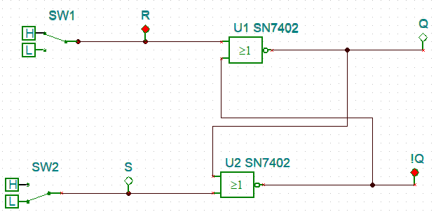После исчезновения сигнала на входе R, триггер, как и должен, сохраняет предыдущий сигнал на выходе:
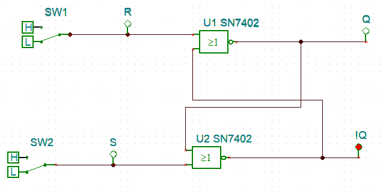Аналогичное поведение в виде смены сигнала и его сохранения наблюдаем для входа S:
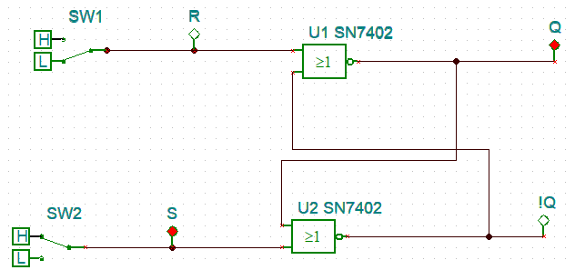Из чего может сделать вывод, что триггер полностью соответсвует своей ранее приведенной таблице истинности.
б) Построим синхронный RS триггер на элементах "И-НЕ."
Для этого соберем на рабочем столе следующую схему:
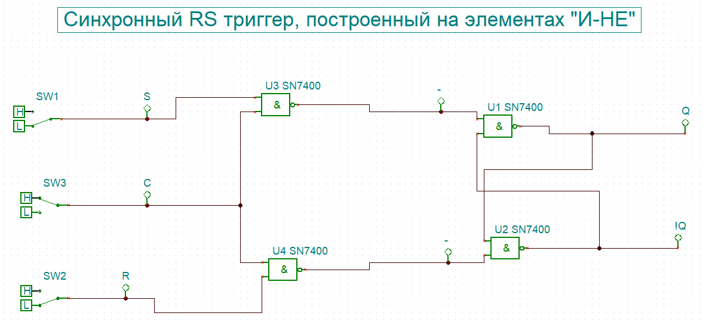Как видим эта схема отличается от асинхронного триггера, как количеством элементов, так и количеством входов. Это объясняется наличием синхронизирующего входа С, реализованного посредством двух дополнительных элементов "И-НЕ". Лишь при наличии сигнала на синхранизационном входе состояние триггера можно изменить.
Проверим работоспособность данной схемы при разных значениях входных сигналов.
Как видно состояние триггера невозможно изменить при отсутсвующем синхросигнале С:
Тогда как при его наличии данный триггер работает аналогично асинхронному:
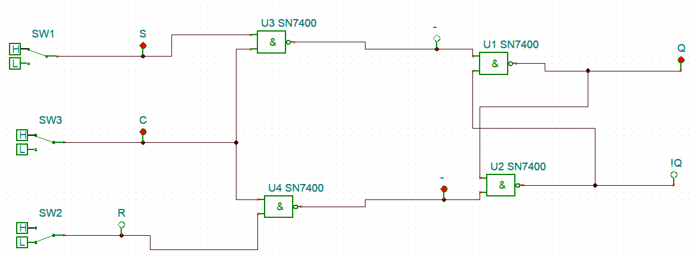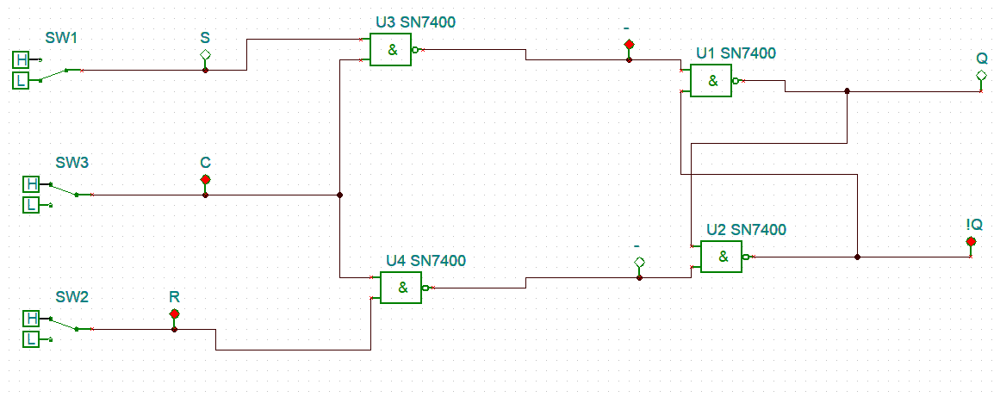
Из проделанных опытов делаем вывод, что триггер работает исправно.
в) Построим асинхронный RS триггер на микросхеме JK.
Для этого воспользуемся встроенной в TINA схемой JK триггера:
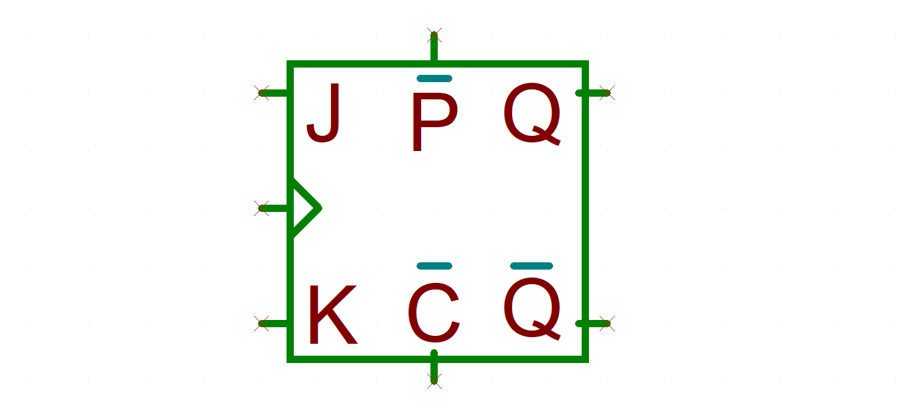Как видно из представленной модели, в отличие от своей схемы во введении JK триггер в программе TINA имеет на два входа больше. Это объсяняется налием входов !P и !С, которые пожно расшивровать, как "preset" и "clear". При подаче на них инвертированного сигнала они ведут себя как входы S и R соответсвенно на асинхронном RS триггере. В плане самого JK триггера стоит отметить, что вышеупомянутые входы не учитывают синхросигнал, а также при отсутсвии сигнала блокируют работу входов J и K. Сами же входы J и K, при наличии сигнала на !P и !С работают соответсвенно таблице истинности приведенной во введении, с тем лишь отличием, что они меняют состояние триггера только при спаде синхросигнала, то есть при измении значения сигнала на синхровходе с 1 на 0.
Исходя из вышеописанного построим слежующую схему, для реализации асинхронного RS триггера на микросхеме JK:
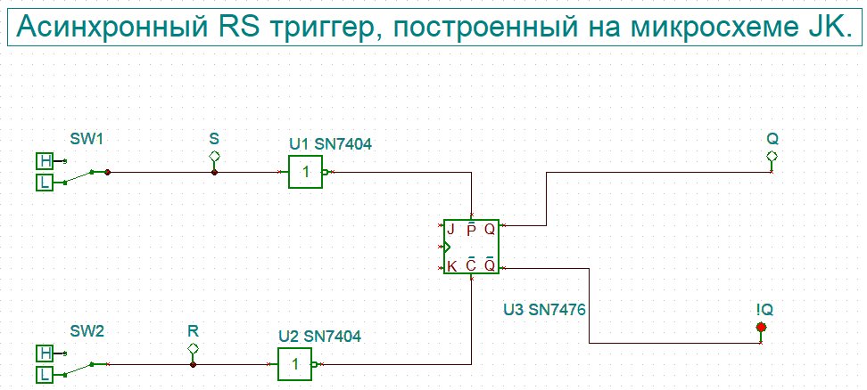Как видим, он полностью соответсвует своей таблице истинности:
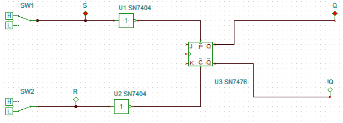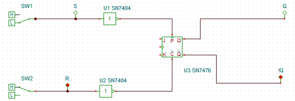
Из чего делаем вывод, что триггер построен верно.